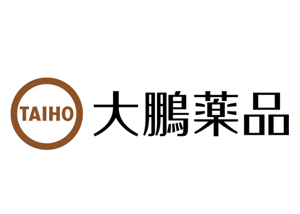
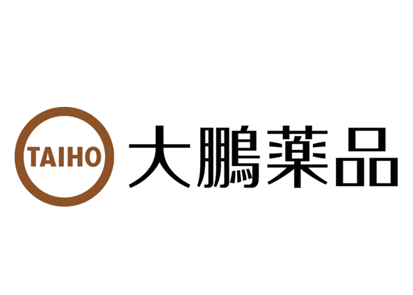
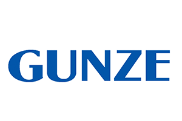
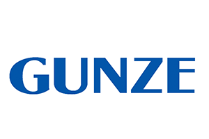

What’ｓ WORKS
能動的なコミュニケーションを引き出すフォローサイト
使い手が主体的にサイトでコミュニケーションを楽しむ。UPcomerWORKSはそんな自発性を生み出し、質の高いコミュニケーションを通じて成長を加速させる人材フォローサイトです。
“質の高いコミュニケーション”がもたらす効果
⾃発的な交流を促すために、サイト内＝オンライン上でグループワークが実施できるコンテンツが標準機能としてご利⽤いただけます。企業側で⽤意したサイトですので、ユーザー側としてはどのように使っていったらよいのか︖利⽤するにあったてのスタンスは︖…などと、どう交流していけばよいかが分かりません。UPcomer WORKSでは、能動的にユーザー間の交流を活性化させるコンテンツで、新しいSNSのカタチをご提案いたします。
UPcomer WORKSでは、社会⼈基礎⼒を知識として学ぶだけではなく、さまざまなビジネスシーンのなかで、どう考え、どう⾏動することが、最も能⼒を発揮することができるかを学び、頭で理解するだけなく⾏動に移すことができる実践⼒を養えるように設計されています。「社会⼈基礎⼒」とは、経済産業省が提唱している3つの能⼒（12の能⼒要素）から構成された仕事をしていくために必要な基礎的な⼒になります。
楽しみながら学び、成長する
OBJECTIVE RESEARCH
時系列から目的に合った活用を知る
人材フォローサイト(内定者SNS)のパイオニアとして20年以上にわたり安定したサイト運営をしております。 多数の有名企業・大手企業にご利用いただくことで、セキュリティチェックをはじめ厳しい審査基準をクリアし-----テキストが途中で切れているから修正する-------
Recruting series
インターンシップフォロー
早期からファンをつくり、有効母集団の強化を図るために、インターンシップに参加した学生のフォローを強化する。
参加後の進捗率を上げたい
学生への情報発信を強化したい
オンラインでグループワークを実施したい
オンラインインターンシップの内容を見直したい
合格者フォロー
選考合格者からの辞退を防止して、内定者承認を確保するためには、合格出し後のフォローを強化する。
内定承諾率を上げたい
合格者の囲い込みを行いたい
フォローにマンパワーが掛けられない
どのようにフォローをしていけば良いか分からない
内定者フォロー
内定者教育
教育コンテンツを軸にしたフォローを通して。社会人としてのマインドセットと入社意欲を高める。
社会人基礎力を理解させたい
学びも内定者間の交流もどちらも行いたい
通信教材を使ったフォローを検討したい
外部講師の研修があるフォローを検討したい
フォロー業務の効率化
インターンシップの準備や新入社員の研修などが重なるなかで、フォローに掛ける工数をできるだけ削減する。
煩雑になっているフォロー業務を減らしたい
現状を見直してよりいっそう効率化したい

Corporate series
新入社員フォロー
入社配属後も継続してフォローを行い、早期離職者を未然に防ぐ。
新入社員早期離職者を防止したい
新入社員と直接つながる環境が欲しい
自社オリジナルの研修を検討したい
育休・産休フォロー
休職中の焦りや不安を解消し。会社へのエンゲージメントを高める。
良い職場復帰になるようにサポートしたい
産休育休による退職者を防止したい
Functions LIST
主要機能一覧
人材フォローサイト（内定者SNS）のパイオニアとして 20年以上にわたり安定したサイト運営をしております。多数の有名企業・大手企業にご利用いただくことで、セキュリティチェックをはじめ厳しい審査基準をクリアし、小規模企業からさまざまな業種の企業にご導入いただいております。
-

マイページ機能
-
トーク機能
-
添付ファイル一括ダウンロード
-
変数設定
-
TOPカバー動画設定
-
データ分析機能
-
タスク機能
-
データエクスポート
-
プッシュメニュー
-
同時ログイン
-
スマホアプリ
-
その他 基本機能一覧
CLIENT LIST
導入企業一覧様


 


 



SITE DATE
導入企業プロフィール
人材フォローサイト(内定者SNS)のパイオニアとして20年以上にわたり安定したサイト運営をしております。多数の有名企業・大手企業にご利用いただくことで、セキュリティチェックをはじめ厳しい審査基準をクリアし、小規模企業からさまざまな業種の企業にご導入いただいております。